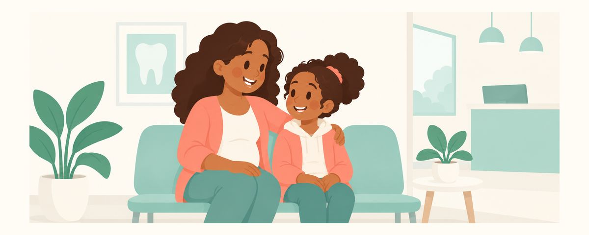

HPVワクチンとお口の健康：中咽頭がん予防のために11〜12歳で知っておきたいこと
HPVは子宮頸がんだけでなく、口の奥やのどにできる中咽頭がんの原因にもなります。ワクチンが11〜12歳で男の子にも女の子にもすすめられる理由と、歯科に見せたいお口の変化をまとめました。
ひと目でチェック
- HPVは中咽頭がんの主な原因のひとつです
- ワクチンは11〜12歳で、男の子にも女の子にもすすめられています
- 口の中の傷やしこりが2週間続いたらチェックを
HPVワクチンというと、女の子が受ける子宮頸がんのワクチンを思い浮かべる方が多いでしょう。でもこのワクチンは、お口やのどの健康とも関係があるため、歯科の分野でも接種が支持されています。歯科の話になぜワクチンが出てくるのか、いつ誰にすすめられているのかをまとめました。お子さんと一緒に読んで話し合うのもおすすめです。
HPVは口やのどにも影響します
ヒトパピローマウイルス（HPV）は、とてもありふれたウイルスです。ほとんどは体が自分でやっつけますが、一部は長く残って、がんの原因になることもあります。
HPVが引き起こすがんとしていちばんよく知られているのは、子宮頸がんです。でもHPVは、口の奥やのどにできる中咽頭がんの原因にもなります。中咽頭は、舌の奥や扁桃、のどちんこのあたりなど、口を開けたときに奥のほうに見える部分です。ですから、子宮頸がんと違って、中咽頭がんは男女どちらにも関係があります。
そのため、米国歯科医師会（ADA）とCDC（米国疾病予防管理センター）は、HPVワクチンの接種をすすめています。お口の中を診る歯科の分野でも、接種が支持されています。
ワクチンが11〜12歳ですすめられているのには理由があります。ワクチンは、ウイルスにふれる前に接種するほど効果的です。そのため、まだウイルスにふれる機会がほとんどないこの年齢が、接種にちょうどよい時期なのです。「まだ小さいのに、もう？」と感じるかもしれませんが、前もって接種しておくことこそが、ワクチンの大切なポイントです。
接種のスケジュールは、こうして確認しましょう
- 子どもがHPVワクチンを接種したかどうか、まず接種記録を確認します。
- まだ接種していなければ、小児科でスケジュールを相談します。何回受けるのか、いつ受けるのかも、そのときに案内してもらえます。
- 接種は男の子にも女の子にもすすめられています。息子だから関係ない、と見過ごさないようにしましょう。
子どもには、なぜ受けるのかを落ち着いて話してあげてください。「注射はいや」という気持ちは自然なものです。こわがらせるより、「あとでかかるかもしれない病気を、前もって防いでくれる注射だよ」のようにわかりやすく説明すると、子どもも受け入れやすくなります。気になることが多いなら、子どもが自分で小児科の先生に聞いてみるのもよいでしょう。
ワクチンとあわせて、お口の健康を守る習慣についても話してあげるとよいでしょう。たばこは、お口やのどにできる病気の大きな危険因子です。思春期にたばこや電子たばこを始めないよう、前もって話し合っておいてください。
保護者によくある誤解は、「ワクチンを受けたから健診はいらない」という考えです。ワクチンはHPVに関係する病気を防ぐのに役立ちますが、お口の中のほかの変化まで代わりに見てくれるわけではありません。定期健診では、歯科医師は歯だけでなくお口の粘膜もあわせてチェックしています。
おうちでもできることがあります。歯みがきのときに、ときどき鏡で舌の上や横、ほおの内側、上あご、歯ぐきを見回す習慣をつけてあげてください。ふだんの自分のお口の様子を知っていれば、変わったところができたときにすぐ気づけます。お口の中の傷のほとんどは数日で自然に治りますが、長引くものは見過ごさないことが大切です。
よくある質問
男の子もHPVワクチンを受けたほうがいいのですか？
はい、接種は男の子にも女の子にもすすめられています。HPVは、男女どちらにも中咽頭がんのような病気を引き起こすことがあります。
11〜12歳を過ぎてしまいました。もう遅いですか？
まだ接種していなければ、小児科でスケジュールを相談してみてください。年齢によって接種の方法が変わることがあるので、医師に案内してもらえば大丈夫です。
なぜ歯科でワクチンの話をするのですか？
HPVが、口の奥やのどにできる中咽頭がんの原因になるからです。そのため歯科の分野でも接種が支持されていて、健診のときにはお口の粘膜もあわせてチェックしています。
お口の中の炎症がなかなか治りません。
お口の中の炎症は、ほとんどが自然に治ります。でも、2週間以上治らない口内炎（潰瘍）やしこりがあるときは、歯科で診てもらいましょう。
こんなときは歯科か小児科に相談しましょう
- お口の中やのどに、2週間以上治らない口内炎（潰瘍）があるとき
- お口の中やのどにさわってわかるしこりが、2週間以上そのままのとき
- 子どもがHPVワクチンを受けたかどうか、はっきりしないとき（小児科）
- 接種のスケジュールや効果について知りたいとき（歯科医師か小児科医）
必要な時期にお知らせで受け取りましょう
歯のカレンダーアプリにお子さんの生年月日（または出産予定日）を入力すると、これらの記事が必要な時期にお知らせとして届きます。無料で、登録も不要です。
出典
このアプリの情報は一般的な教育を目的としたもので、歯科医師による診療に代わるものではありません。お子さまの状態については歯科医師にご相談ください。